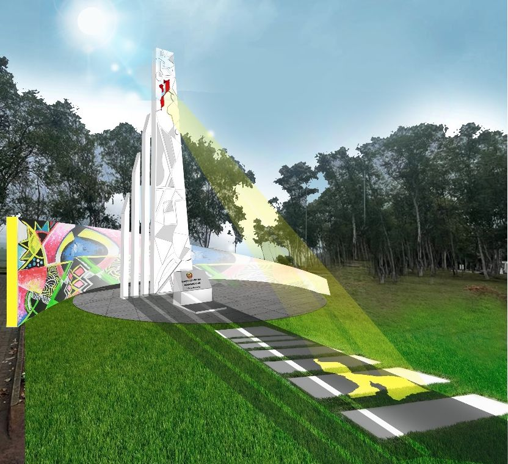

Bem-vindo à Manhiça
O guia para quem vive, visita ou acabou de chegar ao distrito.
Ver serviços essenciaisVila • Wacacana • Rio Incomáti • 80 km de Maputo

O guia para quem vive, visita ou acabou de chegar ao distrito.
Ver serviços essenciaisVila • Wacacana • Rio Incomáti • 80 km de Maputo